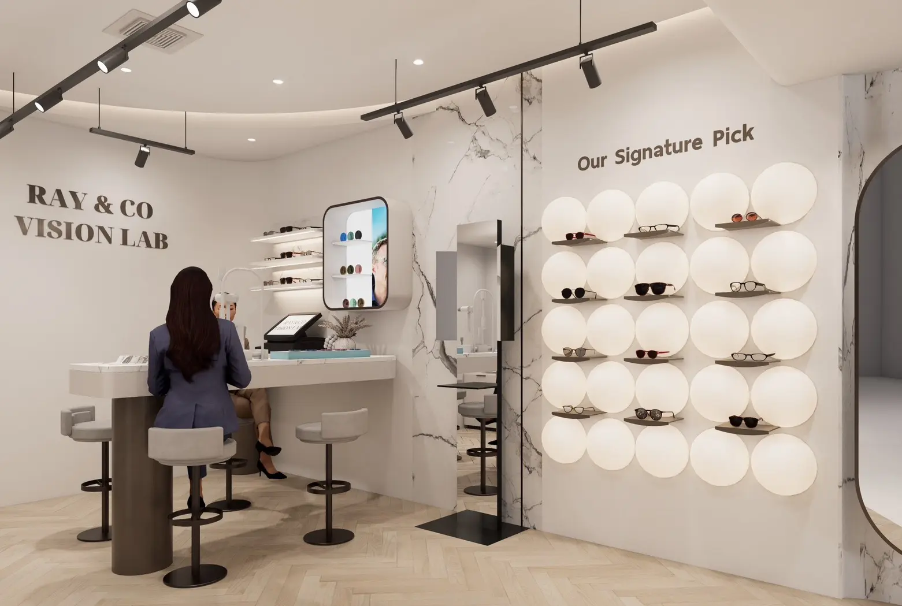
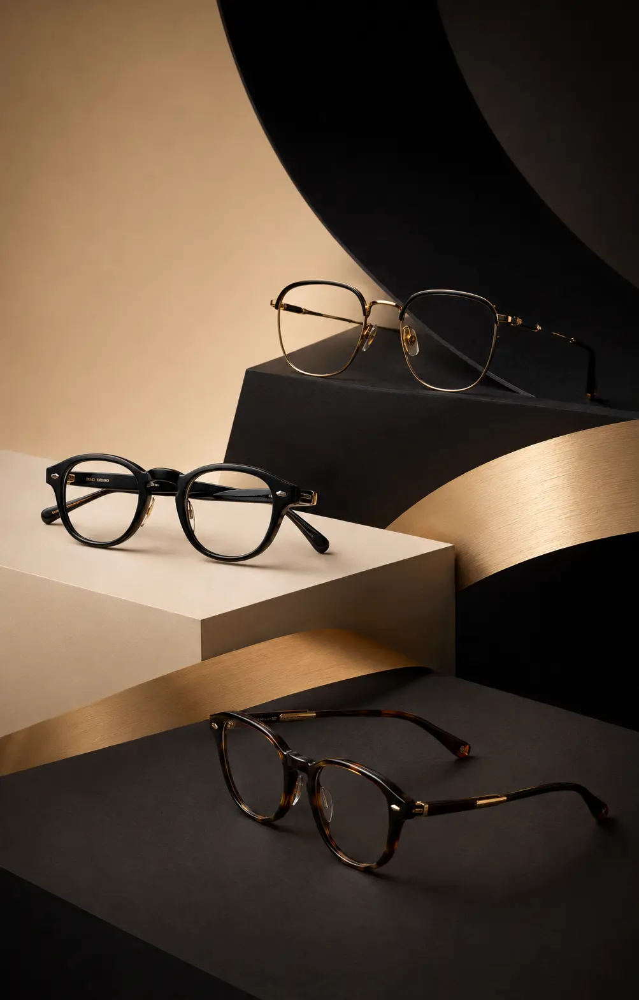

◎
01 / PRECISION
PREMIUM EYE EXAM
ตรวจวัดสายตาอย่างละเอียด
ด้วยเครื่องมือมาตรฐานระดับสากล
RAY & CO, VISION LAB
More Than Eyewear.
We Shape the Way You See the World.
PREMIUM FRAMES · PRECISION VISION · PERSONAL FITTING
ตรวจวัดสายตาอย่างละเอียด
ด้วยเครื่องมือมาตรฐานระดับสากล
คัดสรรกรอบแว่นคุณภาพ
ดีไซน์เหนือกาลเวลา
ปรับแต่งเพื่อความสบาย
และการมองเห็นที่ดีที่สุดสำหรับคุณ
BRANDS WE CARRY
คัดสรรแบรนด์แว่นตาหลากหลายสไตล์ เพื่อให้คุณเลือกกรอบที่เข้ากับใบหน้า บุคลิก และการใช้งานได้อย่างลงตัว
รายการแบรนด์และสินค้าอาจเปลี่ยนแปลงตามคอลเลกชันและสต็อก กรุณาสอบถามรุ่นที่สนใจผ่าน LINE
WHY CHOOSE RAY & CO
รายละเอียดที่เราใส่ใจ เพื่อให้การเลือกแว่นของคุณมั่นใจ สบาย และเป็นตัวเองมากที่สุด
เลือกดีไซน์และวัสดุที่สมดุลทั้งความสวยงาม ความสบาย และการใช้งานในชีวิตประจำวัน
เริ่มจากการทำความเข้าใจพฤติกรรมการใช้สายตา เพื่อให้คำแนะนำได้เหมาะกับคุณมากขึ้น
ช่วยเลือกทรง สี และสัดส่วนของกรอบให้เข้ากับรูปหน้า บุคลิก และสไตล์ที่คุณชอบ
สัมผัสวัสดุ ทดลองสวม และพูดคุยกับทีมงาน เพื่อค้นหากรอบที่รู้สึกเป็นคุณจริง ๆ
อธิบายตัวเลือกกรอบและเลนส์อย่างตรงไปตรงมา เพื่อให้คุณตัดสินใจได้อย่างสบายใจ
ใส่ใจตำแหน่งกรอบและความสบายในการสวมใส่ เพื่อให้เหมาะกับใบหน้าของแต่ละคน
พร้อมให้คำแนะนำเรื่องการดูแล การใช้งาน และความพอดีของแว่นหลังจากรับสินค้า
ส่งแบบที่สนใจและพูดคุยกับทีมงานได้โดยตรง เพื่อเช็กข้อมูลและนัดหมายได้สะดวก
ทุกขั้นตอนถูกออกแบบให้เรียบง่าย เป็นส่วนตัว และสะท้อนความพิถีพิถันของ Ray & Co
THE VISION LAB APPROACH
ทุกสายตามีรายละเอียดต่างกัน เราจึงให้เวลาในการตรวจวัด วิเคราะห์การใช้งาน และปรับแว่นให้สมดุลกับใบหน้าของคุณอย่างพิถีพิถัน
OUR BRAND STORY
โลกเปลี่ยนไปทุกวัน แต่มุมมองของคุณคือสิ่งสำคัญที่สุด
โลกเปลี่ยนไปทุกวัน แต่มุมมองของคุณคือสิ่งสำคัญที่สุด Ray & Co, Vision Lab ถือกำเนิดขึ้นจากความเชื่อที่ว่า การมองเห็นที่คมชัดสามารถเปลี่ยนคุณภาพชีวิต และแว่นตาที่เหมาะสมสามารถเพิ่มความมั่นใจให้คุณได้ในทุกวัน
เราไม่ได้เริ่มต้นจากการถามว่า “แว่นแบบไหนกำลังเป็นที่นิยม” แต่เริ่มต้นจากคำถามที่สำคัญกว่าคือ “แว่นแบบไหนจะเหมาะกับคุณที่สุด”
เราจึงผสานความแม่นยำด้านการมองเห็น การตรวจวิเคราะห์เชิงลึก และการคัดสรรดีไซน์ที่เข้ากับตัวตน เพื่อให้ทุกคู่เป็นมากกว่าอุปกรณ์ แต่เป็นส่วนหนึ่งของชีวิตประจำวันที่คุณอยากสวมใส่
DECODE THE NAME
ชื่อของเราสะท้อนวิธีการทำงาน ตั้งแต่การจัดการลำแสงอย่างแม่นยำ การตรวจวิเคราะห์โดยผู้เชี่ยวชาญ ไปจนถึงความสัมพันธ์ที่ใส่ใจระหว่างเรากับคุณ
ในทางวิทยาศาสตร์ “Ray” คือลำแสงที่เดินทางผ่านเลนส์ตา การทำแว่นตาที่ดีจึงเป็นการบริหารจัดการลำแสงให้ตกกระทบอย่างแม่นยำ เพื่อให้ภาพคมชัด สบายตา และไม่ล้า
ตัวแทนของความสัมพันธ์ที่อบอุ่นและจริงใจ ผนึกกำลังระหว่างผู้เชี่ยวชาญด้านสายตาและตัวคุณ เพื่อคัดสรรแว่นตาที่ตอบโจทย์ทั้งการใช้งานและบุคลิกภาพ
เราเริ่มต้นจากการทำความเข้าใจวิธีที่คุณใช้สายตาในแต่ละวัน เพื่อออกแบบการมองเห็นให้สอดคล้องกับไลฟ์สไตล์ ความต้องการ และมุมมองเฉพาะตัวของคุณ
พื้นที่ตรวจวิเคราะห์เชิงลึกโดยผู้เชี่ยวชาญ ใช้เครื่องมือทันสมัยวิเคราะห์ค่าสายตา กล้ามเนื้อตา และพฤติกรรมการมองเห็น เพื่อค้นหาทางออกที่เหมาะสมที่สุด
WHAT WE STAND FOR
จากชื่อแบรนด์สู่คุณค่าที่เราส่งมอบในทุกขั้นตอน ตั้งแต่การตรวจวัด การให้คำแนะนำ การเลือกสไตล์ ไปจนถึงการดูแลหลังการขาย
แม่นยำตั้งแต่การบริหารจัดการลำแสงผ่านเลนส์ การตรวจวัดในระดับ Lab ไปจนถึงความพอดีของกรอบแว่นที่ตอบโจทย์การใช้งานจริง
ให้คำปรึกษาที่เหมาะกับคุณอย่างตรงไปตรงมา ไม่ยัดเยียดสิ่งที่เกินความจำเป็น เปรียบเสมือนเพื่อนคู่คิดที่จริงใจ
คัดสรรกรอบแว่นดีไซน์ที่เข้ากับรูปหน้า ช่วยเสริมบุคลิกและเพิ่มความมั่นใจให้คุณในทุกวัน
บริการที่อบอุ่นและจริงใจ พร้อมดูแลช่วยเหลือคุณดั่งคนในครอบครัว ทั้งในวันที่ตัดแว่นและตลอดอายุการใช้งาน
OUR BRAND PROMISE
ทุกคู่แว่นผ่านการดูแลด้วยมาตรฐานเดียวกับที่เราเลือกให้คนในครอบครัว


RAY & CO / EDITORIAL 01STYLE JOURNAL
ความหรูของเราไม่ได้อยู่ที่ความฉูดฉาด แต่อยู่ในสัดส่วนที่พอดี วัสดุที่เลือกอย่างตั้งใจ และรายละเอียดเล็ก ๆ ที่ทำให้กรอบแว่นดูมีบุคลิกเมื่ออยู่บนใบหน้าของคุณ
สำรวจคอลเลกชัน ↗OUR SHOWROOM
แวะมาสัมผัสประสบการณ์เลือกแว่นตาด้วยตัวเอง พร้อมรับคำแนะนำอย่างใกล้ชิดจากทีมงานของเรา
01/04
CLIENT EXPERIENCES
ประสบการณ์จริงช่วยบอกเล่าความใส่ใจ ตั้งแต่การเลือกกรอบ การตรวจวัดสายตา ไปจนถึงการดูแลหลังรับแว่น
01/06
HOW IT WORKS
เราออกแบบเส้นทางให้คุณเลือกแว่นได้สบายใจ แม้ยังไม่รู้ว่าควรเริ่มจากกรอบ เลนส์ หรือค่าสายตา
ทัก LINE พร้อมบอกสไตล์ การใช้งาน และปัญหาการมองเห็นที่คุณกำลังพบ
เราช่วยคัดกรอบและแนวทางเลนส์ที่เหมาะกับรูปหน้า บุคลิก และงบประมาณ
เข้ารับการตรวจและฟิตติ้งอย่างละเอียด เพื่อให้คมชัด สบาย และใช้งานได้จริง
ไม่แน่ใจว่าจะเริ่มจากตรงไหน?
เริ่มพูดคุยผ่าน LINECURATED EYEWEAR CATALOG
เมื่อรู้จักแนวคิดและบริการของ Ray & Co แล้ว ลองเลือกชมกรอบแว่นที่เข้ากับบุคลิกและการใช้งานของคุณ และกดสอบถามรายละเอียดหรือสต็อกผ่าน LINE ได้ทันที
ยังไม่พบสไตล์ที่ตรงกับคำค้น
ให้เราช่วยแนะนำผ่าน LINE ↗FOLLOW OUR MOMENTS
ติดตามคอลเลกชันใหม่ เคล็ดลับเลือกแว่น และเรื่องราวจาก Ray & Co ผ่านวิดีโอสั้นของเรา
ติดตามเราบน TikTok ↗FREQUENTLY ASKED
หากไม่พบคำตอบที่ต้องการ สามารถทัก LINE เพื่อคุยกับเราโดยตรงได้เสมอ
เว็บไซต์ใช้สำหรับดูแนวทางคอลเลกชันและบริการ การสอบถามสต็อก ราคา และสั่งซื้อจะดำเนินการผ่าน LINE เพื่อให้เราแนะนำได้ตรงกับคุณมากที่สุด
ส่งรูปหน้าตรงหรือภาพสไตล์แว่นที่ชอบทาง LINE พร้อมเล่าลักษณะการใช้งาน เราจะช่วยคัดตัวเลือกที่เหมาะก่อนเข้ามาลองจริง
คุณสามารถเริ่มจากส่วนใดก่อนก็ได้ แต่การวิเคราะห์การมองเห็นและพฤติกรรมการใช้งานจะช่วยให้เลือกทั้งกรอบและเลนส์ได้เหมาะสมยิ่งขึ้น
เราดูแลเรื่องความพอดีและความสบายในการสวมใส่ พร้อมให้คำแนะนำการดูแลแว่นตาตลอดการใช้งาน
ช่องทางหลักคือ LINE Official Account ซึ่งเชื่อมอยู่กับปุ่มสีเขียวทุกจุดบนเว็บไซต์
Google Map จะแสดงที่นี่
หลังเปลี่ยนข้อมูลจริงและตั้ง isSample: false
PERSONAL CONSULTATION
สอบถามคอลเลกชัน นัดหมายตรวจสายตา หรือให้เราช่วยเลือกกรอบที่เข้ากับคุณ